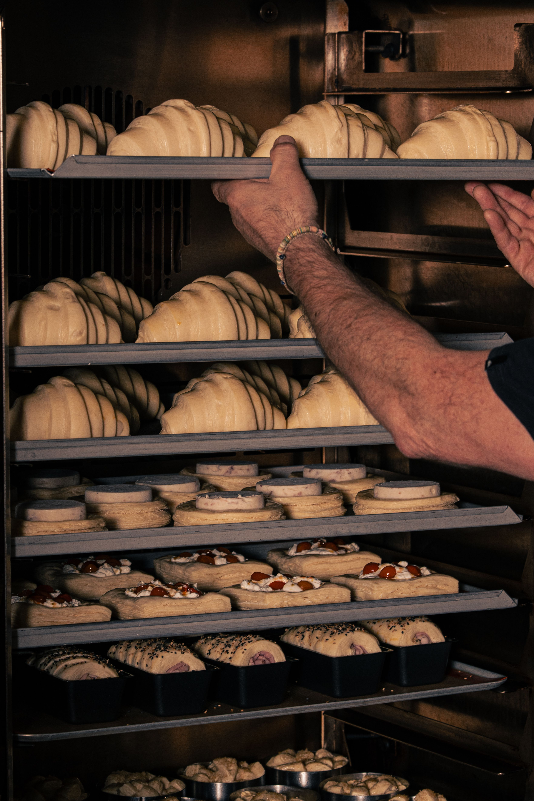

¿Quienes Somos?

Somos una panadería que nace del amor por lo artesanal y el gusto por ofrecer productos frescos, deliciosos y hechos con dedicación. Cada día trabajamos para llevar a nuestros clientes el sabor y la calidad que merecen, cuidando cada detalle desde la preparación hasta el momento de servir. Más que una panadería, queremos ser ese lugar al que siempre quieras volver: donde el buen sabor, la calidad y la calidez se encuentran en cada bocado.
⭐ Opiniones de nuestros clientes
- María:“Productos frescos y deliciosos.”
- Andres:“Excelente atención y muy buen sabor.”
- Carlos:“Las tortas son increíbles y muy bonitas.”
- Laura:“Pan fresco y de excelente calidad.”
🥳 Ocasiones especiales
| Ocasión | Productos recomendados | Ideal para |
|---|---|---|
| Cumpleaños | Tortas y cupcakes | Celebraciones |
| Desayunos | Pan, croissants y café | Familias |
| Reuniones | Panadería surtida | Amigos y empresas |
| Fcehas especiales | Tortas y postres | Celebraciones |
| Eventos | Bandejas sutidas | Grupos grandes |